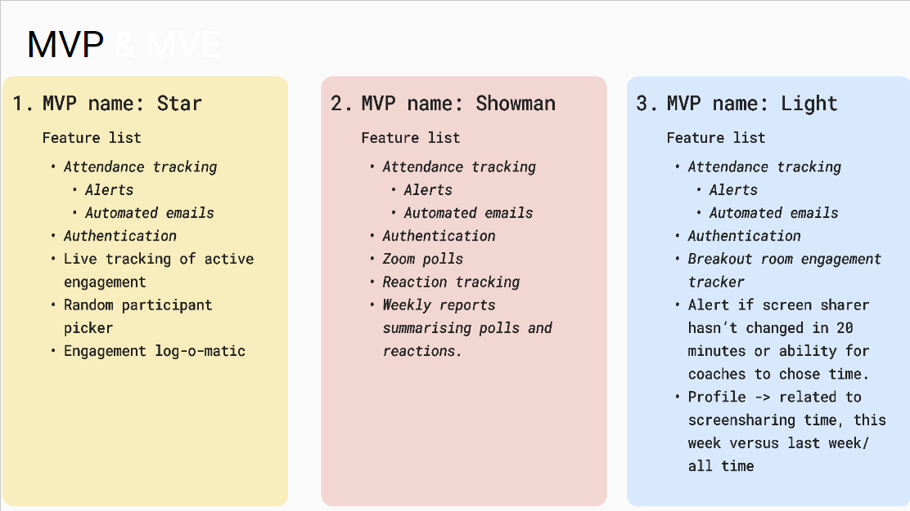
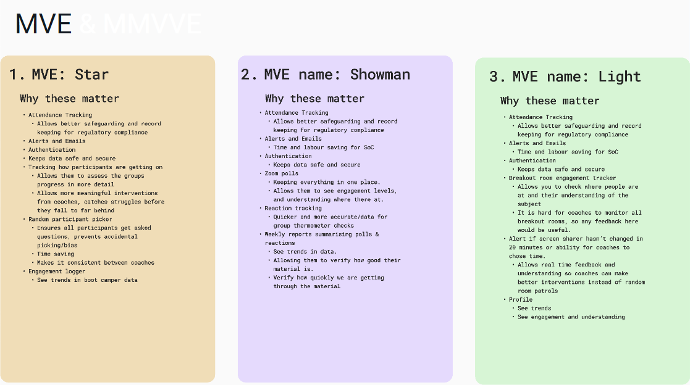
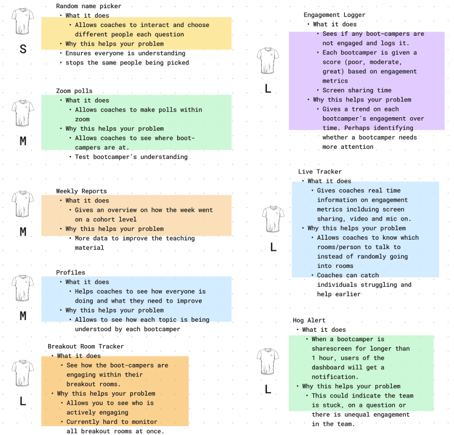
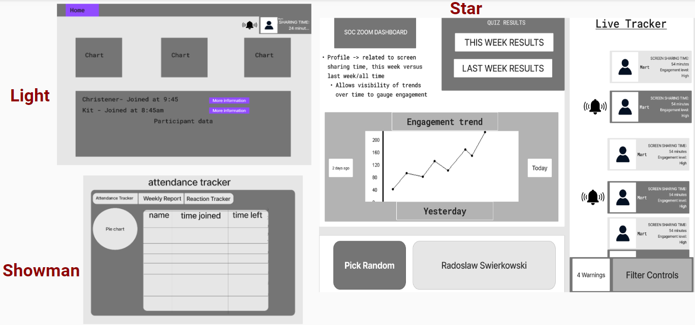
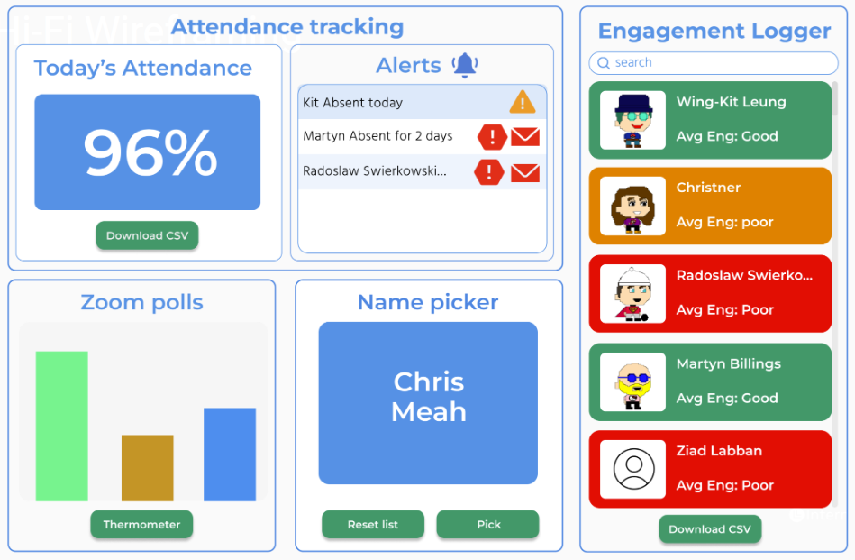
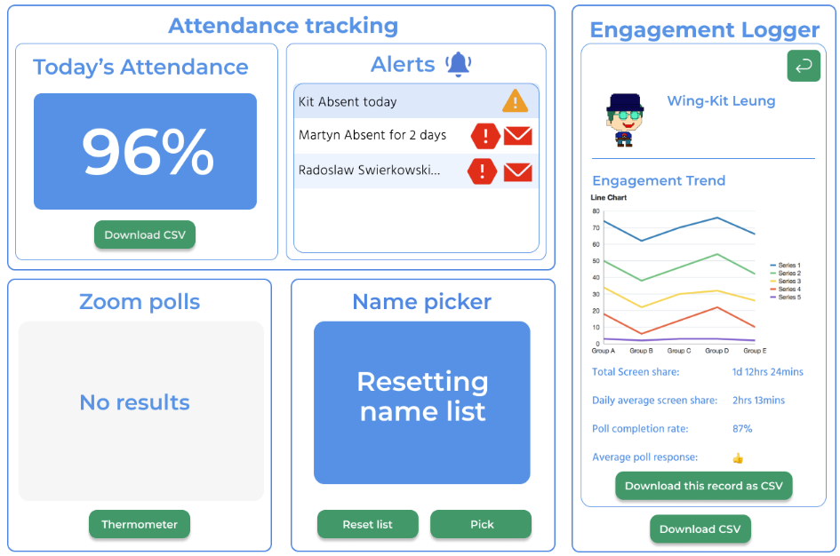
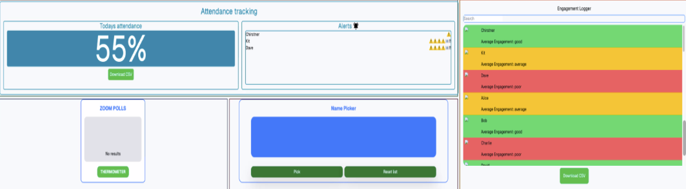

Intern
Tech Stack
Next.js
Tailwind
TypeScript
Node.js
PostgreSQL
Supabase
Jest
Playwright
Figma
Git
Overview
I was one of six developers who worked on this project. We collaborated with a stakeholder to create a website for the School of Code that assists coaches in managing attendance tracking. We had a four-week deadline to complete this project. The result of our efforts is 'Intern,' a website designed to handle all the manual labor, thereby simplifying tasks for the coaches.
Week One:
Briefing day began with us creating our team manifesto, in which we discussed and agreed upon our communication methods, such as Zoom and Slack, as well as our decision-making processes, including dot voting and wheel spinning. We also outlined our conflict resolution strategies. We then received our problem statement: 'The School of Code requires an innovative and efficient solution for tracking and analyzing participant engagement and attendance in live Zoom classes. The existing manual process is laborious and fails to utilize the rich data available through Zoom's API.' After receiving the brief, we knew we needed to understand the problem before we could start considering solutions. We began by addressing the 5 W's: Who, What, When, Where, and Why. Then, we worked on understanding the users of the product, such as the CEO and coaches to tailor our approach to their needs. Following this, we created a list of questions we had about the problem, and then we met with the stakeholder to get answers to our questions. With answers in mind we had an in-depth look at how the problem is already being solved.
The next day, we started by conducting competitor research to explore how the problem could be solved, ranging from using pen and paper to having things automatically tracked. We then moved on to developing personas to empathize with and understand how the problem impacts them. We decided to create three personas. The primary users are the coaches, who would use the product to track bootcampers' attendance, understanding, and learning. The secondary user is the CEO; we wanted to ensure the product would help his business perform efficiently. We also developed a persona for the bootcamp participants. Even though they won't be using the dashboard directly, we wanted to ensure it benefits them and overall enhances their learning experience.


Disney Ideation time: This was when we shared numerous ideas as if there were no limits to implementation. We then discussed these ideas in the realist stage to evaluate their feasibility. Finally, we moved on to the critic stage, where we compiled a list of potential questions and problems that might arise during implementation. By the end, we had come up with a list of features that we thought would be useful in a simple, integrated dashboard.


In the next phase, we focused on developing our Minimum Viable Product (MVP) and Minimum Viable Experiment (MVE). The MVP process involved ideating three feasible solutions, considering our time constraints. We then transitioned to exploring MVEs, delving into the significance of each feature to ensure they aligned with our project goals. We then moved on to user stories, here we took the features we had come up with and created user stories for each of them which helped us visualise how the end users would interact with the product.


We then shifted our attention to narrowing the scope of our project. Collaborating with a stakeholder, it was crucial for them to specify what they considered the most important aspect of the project. To facilitate this, we employed the shirt-sizing technique to communicate the size of different features. This approach involves categorizing tasks into sizes - small, medium, and large - similar to clothing sizes, to indicate their complexity and time requirements.
Regardless of their choices, authentication and attendance tracking were mandatory features. However, they were restricted to choosing no more than one feature from each size category - small, medium, and large - due to the time constraints of our project. This strategy helped us effectively prioritize our tasks and align our efforts with the stakeholder's primary objectives.

Moving forward, we began designing low-fidelity (low-fi) wireframes. These basic designs laid the groundwork for the dashboard, allowing us to establish the fundamental structure and user interface. Finally, we progressed to high-fidelity (hi-fi) wireframes, where we refined our designs, adding detailed elements and a more sophisticated aesthetic. This final step was crucial in bringing our dashboard closer to a polished, user-ready state.



Week Two:
As we moved into the second week, we conducted a retrospective of the previous week. We then moved on to this weeks tasks the first being deciding our tech stack. We did this by deliberating the pros and cons of various tech stacks, and then we dot-voted on our preferred choices. The tech stack that received the highest votes was Next.js, TypeScript, and Tailwind - we had only had 2 days learning on these languages! This discussion was followed by planning the tasks for the upcoming week. We decided to split into two teams of three, using the Wheel of Names for team selection.
My team began by deploying our site to Vercel, enabling continuous deployment. Additionally, we established a protection protocol for the main branch, ensuring that no one could push to it without a pull request and a review from another team member, thereby safeguarding the integrity of the main branch. Meanwhile, the other team documented our sprint plan on Trello, outlining tasks in the form of tickets. We then moved on to the next tasks one team started working on the front-end tickets, bringing our high-fidelity designs to life. Whilst the other team focused on authentication, implementing it through Superbase to secure all bootcampers' data.
Throughout the second week, we progressed from taking front-end tickets labeled 'backlog' on Trello to marking them 'deployed.' Everyone contributed to various front-end tasks needed for the dashboard, such as the attendance tracker, engagement logger, live alerts, and Zoom polls. We initially developed the front-end using dummy data. We ended the week by planning our stakeholder presentation. We aimed to ensure that we could clearly and concisely communicate our ideas and plans for the project. Additionally, we prepared to answer any questions the stakeholder might have. For this purpose, we decided to use a slide deck to present our ideas and plans for the project.
The image below demonstrating our progress during week two was taken on a wide monitor. Unfortuantly there are no other images from this stage of the project.

Week Three:
We unfortunately lost two team members at the start of this week as they went to an Experian event for the day. While they were away, they worked on the engagement logger algorithm. We continued with the week by planning tasks. This time, the main focus was on the back-end, with some minor tweaks to the front-end. My team worked on the CRUD (Create, Read, Update, Delete) functions for the Zoom polls and the name picker feature. We also conducted testing for the API calls/routes. One evening, I worked overtime because we hadn't succeeded in getting the authentication token refresher working. However, after returning to it a few hours later, it clicked, and I got it to work. My team ended the week working on accessing the webhooks for engagement logging. The other team, throughout the rest of the week, planned the database schema and figured out how to export the CSV file for the engagement logger.
Week Four:
The final week arrived. We gathered together and decided it was best to avoid making any major changes to the codebase, except for the prop drilling setup and a few component connections. The rest of the team focused on these tasks, while myself and Ziad concentrated on testing. We used Playwright for end-to-end testing and Jest for unit testing. We encountered some real issues when testing; the error we kept getting was "too many connections" with our database. I messaged the group to see if any of the others were coming across similar problems, and they were. With this knowledge, I suggested we all meet in our main room to brainstorm solutions. We tried a few solutions such as increasing the max pool connection, however, this didn't resolve the issue. I came up with the idea of migrating our database to another provider, Supabase, as they have a much higher connection limit. This resolved the issue. Once we had finished our testing tickets, I started preparing the presentation for demo day by creating the slides and providing teammates with some bullet points on what they could possibly talk about on each slide. After all was said and done, we held one last retrospective to reflect on the project and our experiences. We discussed what we would do differently if we had the chance to redo it. Finally, we celebrated the completion of the project.
End Result:
Personal Reflections
This project was not only a significant challenge due to the multitude of new concepts to learn and manage concurrently, but it also proved to be an immensely rewarding experience. The complexity of the tasks pushed me to expand my technical expertise and adaptability. Specifically, the incorporation of Tailwind into the project has been a game-changer, and I've integrated it into my current projects as a result. Managing the team was demanding at times but valuable, as I made sure everyone's voice was heard. Finally, managing stakeholders turned out to be a key learning experience. It highlighted how vital it is to balance various stakeholder expectations and to communicate effectively about both successes and obstacles.
Vision for the future: In the first week, I would